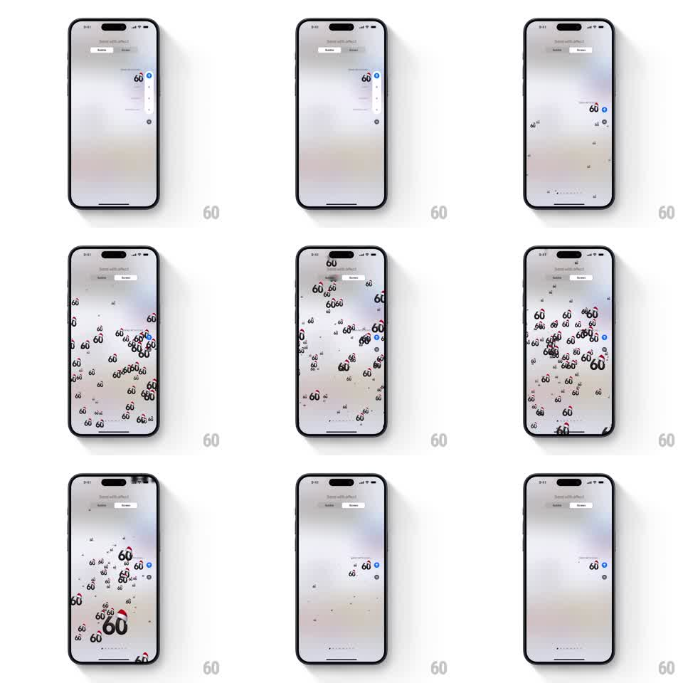

Media
Frame-by-frame

Rebuild this animation 1:1: Apple Messages' Echo screen effect - the sent bubble multiplies into dozens of miniature duplicates that swirl out from its position and fill the screen in a churning vortex before dissolving.

Rebuild this animation 1:1: Apple Messages' Echo screen effect - the sent bubble multiplies into dozens of miniature duplicates that swirl out from its position and fill the screen in a churning vortex before dissolving. ## Integration Integration: stack-agnostic spec - springs given as stiffness/damping, timed motions as duration + curve; map every value to your framework and animation library of choice. ## Scene The Messages "Send with effect" preview (Bubble / Screen tabs at top): a blurred conversation behind, the composed message bubble at the lower right. On trigger, the bubble spawns a swarm of small copies of itself that spiral outward across the whole screen, tumbling and drifting, then thin out and vanish, returning to the plain conversation. ## Motion spec Pattern: echo swarm, ~6s total. - The original bubble pulses once (scale 1 to 1.1 to 1, 200ms), then emits miniature copies (about 0.35x to 0.6x scale) at 20ms intervals. - Each copy travels on a swirling path radiating from the bubble's position: initial velocity outward with a tangential component, eased (1.5s), rotating slightly as it flies (plus/minus 15 degrees). - Copies spawn in waves until roughly 40 to 60 fill the screen, density peaking mid-effect; later waves drift slower. - After ~4s, emission stops; existing copies drift toward the edges, fade, and shrink (800ms), ending on the clean conversation. ## Calibration - Copies are true miniatures of the bubble (same text, same color), not generic particles. - The swirl direction is consistent (a vortex), but per-copy speed and radius vary so it never looks like a ring. ## Reduced motion Single bubble pulse, no swarm. ## Don't miss - The swarm originates exactly at the sent bubble, not screen center. - Copies overlap and layer freely - a churning cloud, not an ordered grid.